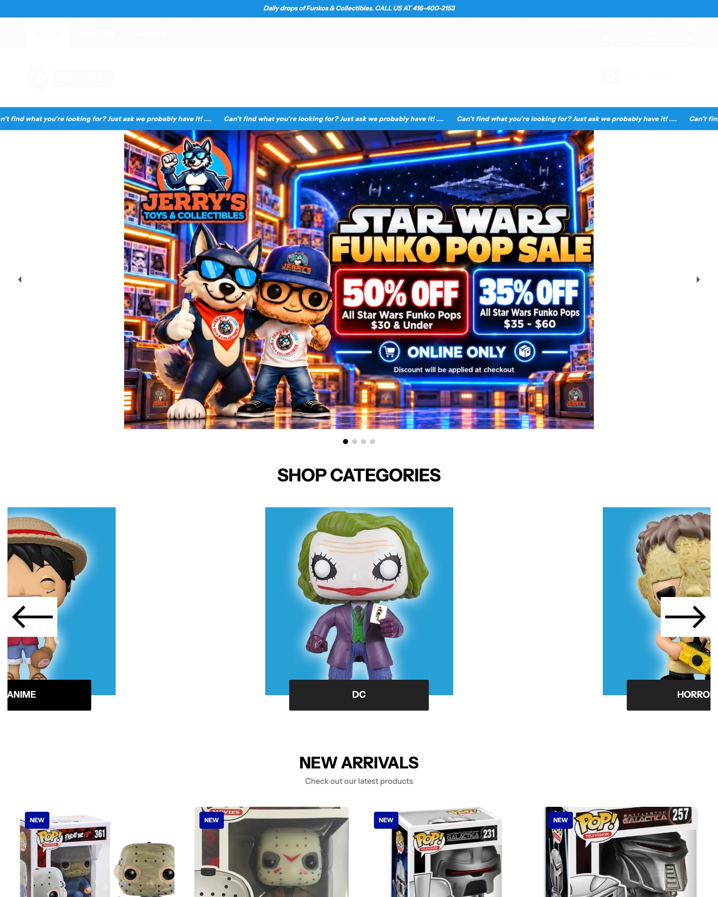

Made for Jerry's Toys · Private preview
Your store, with Rose beside it.
Imagine a collector asking about a hard-to-find Pop after hours. Rose can answer from your store information and guide shoppers toward the next step. Lead handoff would be configured before installing Rose on your live store.

This is a screenshot of Jerry's public site. The Rose assistant is interactive; it is not installed on Jerry's live store.Real website ↗
Ask about collectibles
Try “Do you have a particular Funko Pop?” Rose should help with the request, not invent live stock.
Ask about the shop
Ask where the store is, what categories it carries, or how to get in touch.
Try chat or voice
Open the assistant in the preview, then switch between Chat and Voice. This is a demonstration, not a live store installation.